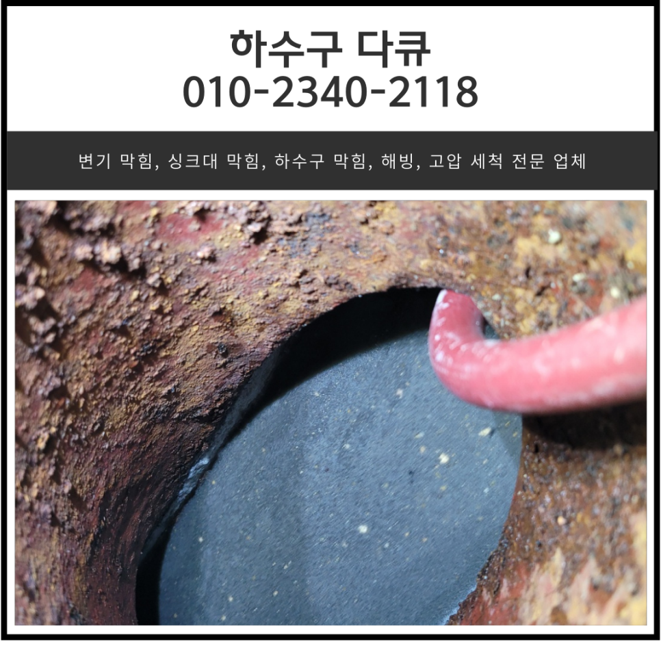
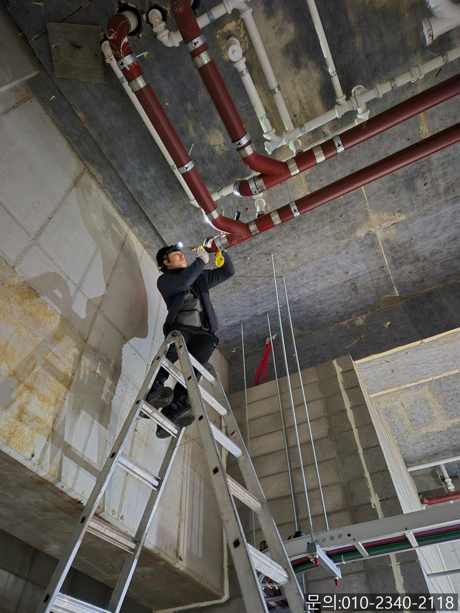
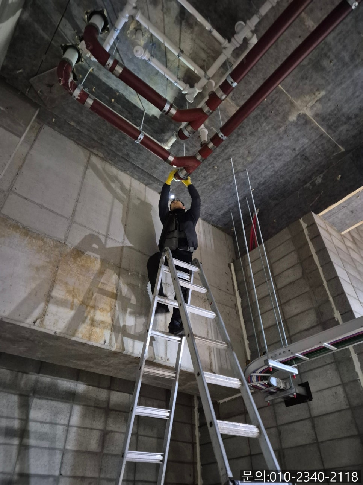
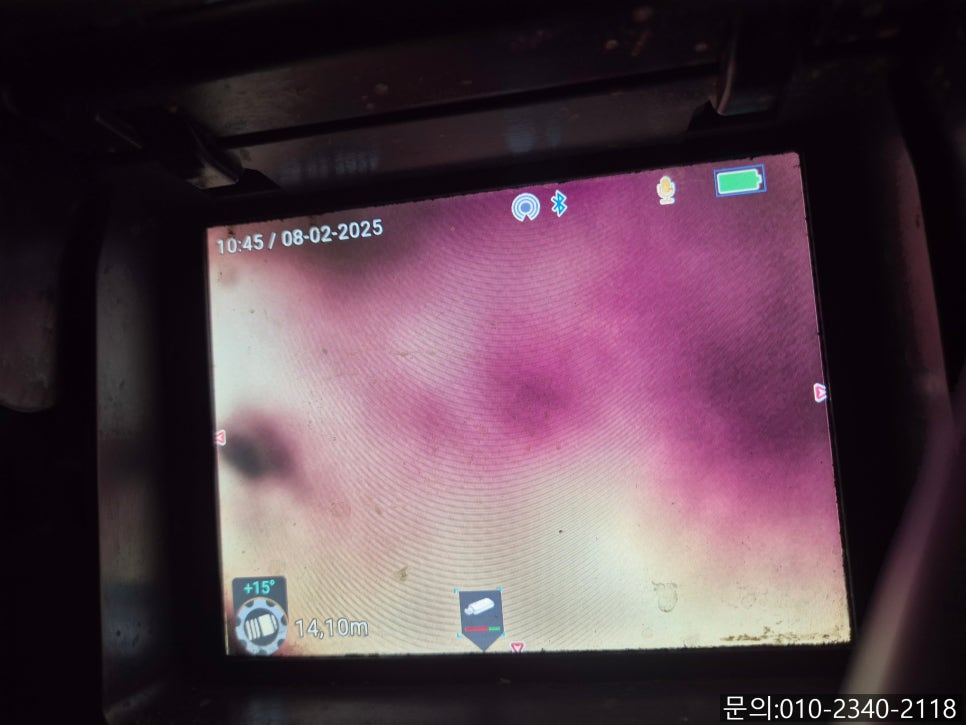
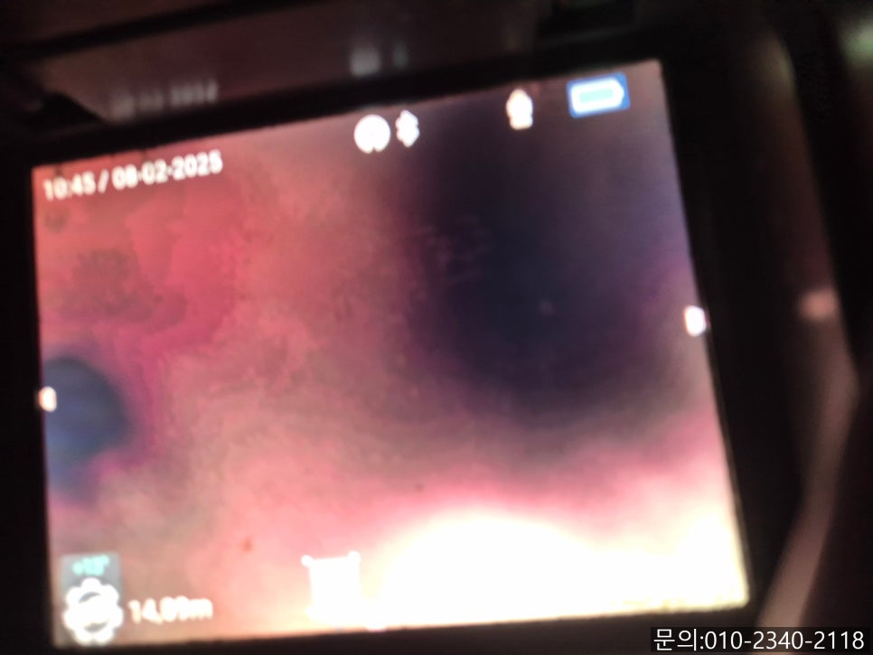
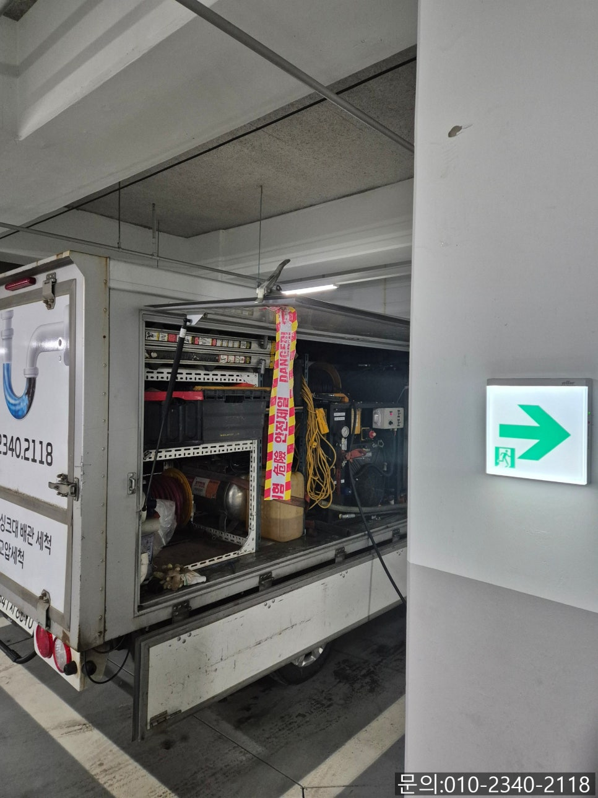
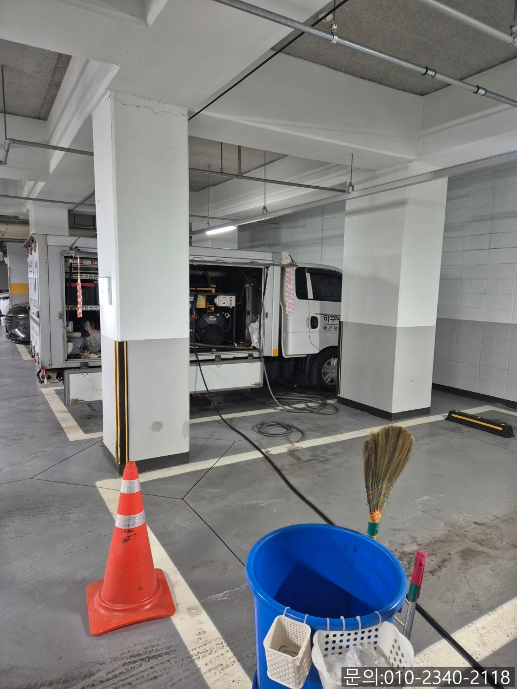

🏠 남촌동 주방 바닥 역류 오산 중앙동 상가 하수구 배관 막힘 고압세척
오산 중앙동 싱크대막힘 전문 시공 후기

📋 작업 개요
- 위치: 오산 중앙동, 중앙동, 오산
- 서비스 유형: 싱크대막힘, 하수구막힘, 배관막힘, 역류해결, 뚫는업체, 배관청소, 고압세척
- 작업 일시: 2025. 2. 12. 9:00
- 업체명: 하수구수사대 (010-5615-2118)
🔍 문제 상황
안녕하세요.
남촌동 주방 바닥 역류, 오산 중앙동 상가 하수구 배관 막힘 고압세척 업체 하수구 다큐입니다.
가정집이 아닌 불특정 다수가 이용하는 상가 건물의 경우 남촌동 주방 바닥 역류가 발생하게 되면 셀프로 막힘을 해결하기 어렵습니다.
상가 건물에 수많은 배관들이 얽혀있을 뿐만 아니라 배관에 쌓여 이물질의 양도 많다 보니 전문적인 장비를 갖추고 다양한 현장 경험을 바탕으로 노하우가 많은 설비 업체를 선정하셔야 하는데요.
오랜 시간 상가, 사무실, 가정집, 공장 등 다양한 현장 경험을 바탕으로 어떤 현장이던 정확한 원인을 찾아 깔끔하게 해결해 드리고 있습니다.
오늘은 남촌동 주방 바닥 역류로 연락을 받고 다녀온 현장을 소개해 드릴게요.
여러 매장이 같이 사용하는 상가 건물 화장실과 싱크대에서 역류가 발생해 장사를 하지 못하고 있다며 관리 사무실에서 연락을 주셨습니다.
건물 하수구 한 군데가 아닌 여러 곳에서 동시에 문제가 발생했다는 것은 공용으로 사용하는 배관에 문제가 생겼을 확률이 높아 필요한 장비를 챙겨 신속하게 방문해 드렸습니다.

🔎 원인 분석
💡 전문가 진단: 정밀 진단 장비를 사용하여 슬러지의 고착 여부를 판명하고 타격/세척 작업을 실시했습니다.
현장에 도착해 역류가 일어나고 있는 현장을 둘러보니 건물에서 공용으로 사용하고 있는 배관이 막혔다고 판단되어 배관을 찾기 시작했습니다.
관리 사무실 직원분의 도움으로 배관 구조를 어렵지 않게 파악할 수 있었어요.
지하주차장으로 내려가 말씀해 주신 배관이 맞는지 사다리를 타고 올라가 점검을 해보기 시작했어요.
사다리를 타고 올라가 배관 뚜껑을 열어보니 육안으로도 이물질이 차 있는 걸 확인할 수 있었어요.
그래도 어느 지점까지 이물질이 차 있는 건지 체크해 보기 위해 내시경 카메라로 꼼꼼하게 확인 작업을 거쳤습니다.
예상했던 것처럼 건물에서 사용하고 흘려버린 이물질과 오랜 시간 배관에 쌓인 기름 슬러지로 인해 통수가 전혀 되지 않는 상태로 고객님께 상황을 전달해 드리고 고압세척을 진행하기로 했습니다.
고압세척 장비는 강력한 압력의 물줄기를 이용해 기름 슬러지나 기타 이물질을 청소하는데요.
일반적으로 수도의 압력은 3~5bar인데, 고압세척의 경우 차량에 설치된 물탱크에 물을 채워 200~500bar의 강력한 수압으로 1분에 30리터 이상의 물을 쏟아내 쌓여있는 기름 슬러지와 각종 이물질을 제거하게 됩니다.

🔧 작업 과정
건물에서 수도를 연결해 물탱크에 물을 가득 받아놓은 다음 다시 사다리를 타고 올라가 작업을 진행하기로 했어요.
고압세척은 물탱크에 물을 받아야 하는 등 작업 준비 시간이 조금 소요되지만 배관이 크거나 긴 경우, 또는 모래나 흙처럼 무거운 이물질이 쌓여있는 경우 등의 고난도 작업에서는 고압세척만이 유일한 해결책입니다.
막힘의 원인도 파악되었고 물탱크에 물도 가득 채웠으니 사다리를 타고 올라가 작업을 시작했어요.
높은 압력의 물을 이용해 배관 청소가 시작되자 쌓여있던 기름 슬러지들이 빠져나오기 시작합니다.
사진으로 남기지는 못했지만 배관에서부터 보양 작업을 진행해 이물질이 외부로 떨어지지 않게 막고 작업을 진행했어요.
고압 세척 장비를 이용해 청소를 진행하자 배관에 돌처럼 굳어있던 슬러지 덩어리들이 빠져나오기 시작합니다.
이렇게 큰 슬러지 덩어리가 막고 있으니 플렉스 샤프트로 제거할 수 없었겠죠?
많은 양의 기름 슬러지가 제거된 다음 내시경 카메라로 내부를 다시 점검해 보니 아직도 슬러지가 남아있어 몇 차례 더 작업을 진행했어요.
슬러지 덩어리와 머리카락 등 이물질이 보이시죠?
공동으로 쓰고 있는 배관에 이물질이 가득 차 있다 보니 건물 곳곳에서 역류가 일어날 수밖에 없었을 것 같아요.
한참을 반복해서 작업한 끝에 많은 양의 기름 슬러지를 제거하고 내시경 카메라를 이용해 잔여 이물질이 없는 것까지 확인하고 오산 중앙동 상가 하수구 배관 막힘 고압세척 작업을 마무리할 수 있었어요.
지하주차장에서 작업한 자리를 정리하고 건물에서 역류했던 화장실과 싱크대를 살펴보니 역류했던 물이 모두 빠져있었고, 많은 양의 물을 사용해도 아무런 문제가 없는 것까지 확인한 뒤 장비를 챙겨 철수했습니다.


✅ 작업 완료
상가 건물의 하수구 막힘은 일반 가정집보다 구조가 복잡하다 보니 다양한 현장 경험을 가진 전문가가 작업을 해야 합니다.
오산 중앙동 상가 하수구 배관 막힘 고압세척 전문 하수구 다큐는 다년간 여러 현장에서 쌓인 노하우를 바탕으로 꼼꼼하게 작업해 드리고 있으니 지금 하수구 막힘으로 고민하고 계신다면 연락 주세요.
확실하게 뚫어드리겠습니다.
경기도 용인시 수지구 풍덕천로129번길 9 5층 590호




⚠️ 주방 싱크대 배관 막힘 예방 수칙
- ✅ 기름기가 묻은 식기나 프라이팬은 설거지 전 키친타올로 반드시 기름때를 닦아내세요.
- ✅ 주기적으로 싱크대 개수대에 뜨거운 물을 가득 받아 한 번에 내려 배관 내부 기름을 씻어내세요.
- ✅ 배수구 거름망을 미세한 필터로 사용하시고 음식물 찌꺼기가 틈으로 새어 들지 않게 관리하세요.
- ✅ 베이킹소다와 식초를 뜨거운 물과 함께 일주일에 한 번씩 부어주면 배관 살균과 막힘 예방에 좋습니다.
💡 핵심 정리
- 확실한 장비 작업(내시경 점검 및 샤프트 스케일링)으로 원인을 뿌리 뽑습니다.
- 작업 후 1년 이내에 동일한 부위 재발 시 100% 무상 A/S 서비스를 보장합니다.
- 서울 · 경기 · 인천 전 지역에 24시간 언제든 긴급 출동할 수 있도록 항시 대기 중입니다.
❓ 자주 묻는 질문 (FAQ)
🚨 오산 중앙동 싱크대막힘 문제로 고민이신가요?
정확한 원인 진단과 확실한 시공으로 재발 없는 해결을 약속드립니다.
24시간 긴급 출동 | 서울 · 경기 · 인천 전지역 | 1년 내 재발 시 무상 A/S